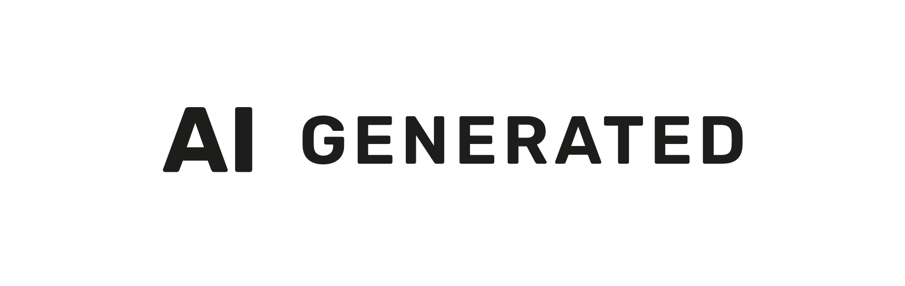
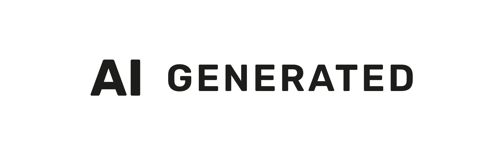
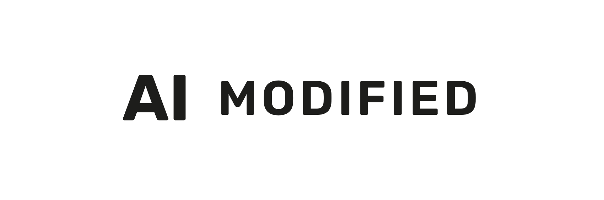
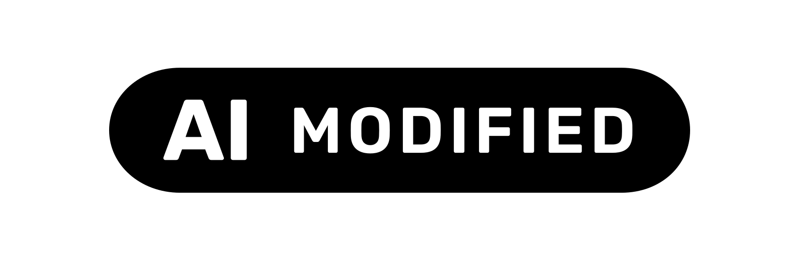
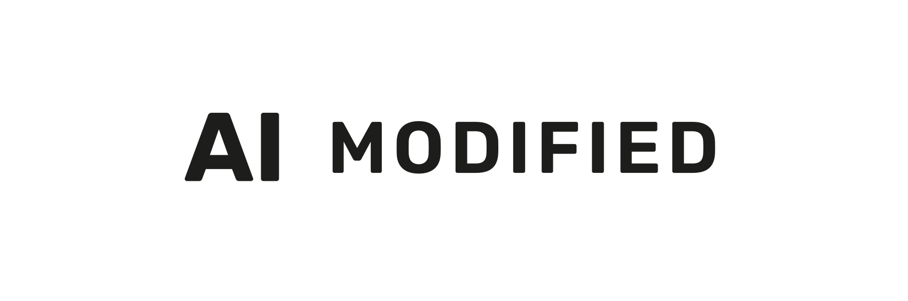
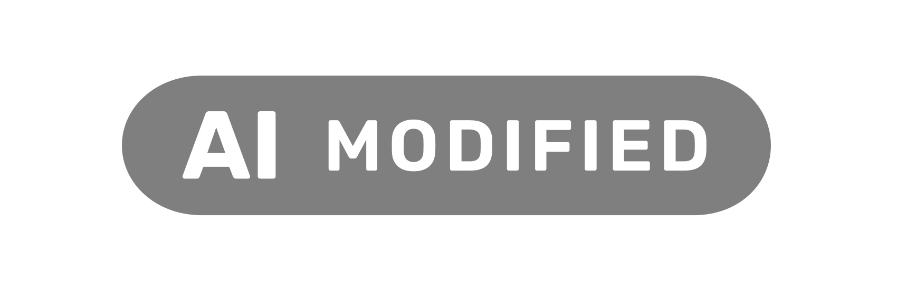

KI-Kennzeichnung
Die EU-Icons der Europäischen Kommission, mit denen auf dieser Website KI-erzeugte Inhalte gekennzeichnet werden.
Alle zwölf Dateien liegen im Repository unter
app-assets/labels/ und sind von hier direkt abrufbar — damit sie
niemand ein zweites Mal suchen muss. Es sind Vektordateien, sie skalieren
verlustfrei.
AI GENERATED — vollständig von KI erzeugt
Das Label für unsere Bildmotive: die HEPHAISTOS-Illustrationen, die Bilder der Vorlagenseiten und die Produktbilder im Shop.



AI MODIFIED — vorhandenes Material mit KI bearbeitet
Für Fotos, die es wirklich gab und die nachträglich mit KI verändert wurden. Auf dieser Website derzeit nicht im Einsatz.




AI — allgemeiner Hinweis
Quadratisch, für kleine Darstellungen, wenn offen bleiben soll, ob erzeugt oder bearbeitet.

So wird eingebaut
Ein Label ist eine Grafik — und eine Grafik allein genügt nicht. Art. 50 Abs. 5 der Verordnung (EU) 2024/1689 verlangt, dass die Information auch barrierefrei ist. Deshalb bekommt jedes Label ein sprechendes alt, nie alt="", und es wird nie als CSS-Hintergrundbild eingebunden: beides macht den Hinweis für Screenreader unsichtbar.
<img src="/app-assets/labels/label-ai-generated-black.svg"
alt="KI-generiert — dieses Bild wurde mit Künstlicher Intelligenz erzeugt"
width="150" height="48" loading="lazy">
Nach den Vorgaben der Kommission soll das Icon spätestens bei der ersten Wahrnehmung klar erkennbar und unterscheidbar sein, an einer Stelle ohne überlagernde Elemente stehen, unmittelbar in den Inhalt eingebettet sein und auch dann sichtbar bleiben, wenn der Inhalt weitergegeben oder heruntergeladen wird. Dazu gehören Alternativtext beziehungsweise ARIA-Beschriftung, verständliche Sprache und eine ausreichende Sichtbarkeitsdauer.
Die Kennzeichnungspflicht für täuschend echte Darstellungen betrifft lebensechte Abbildungen von Menschen; stilisierte Illustrationen fallen nicht darunter. Auf dieser Website ist trotzdem alles gekennzeichnet.